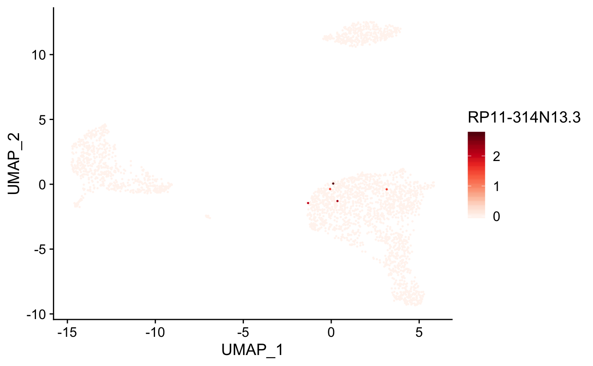
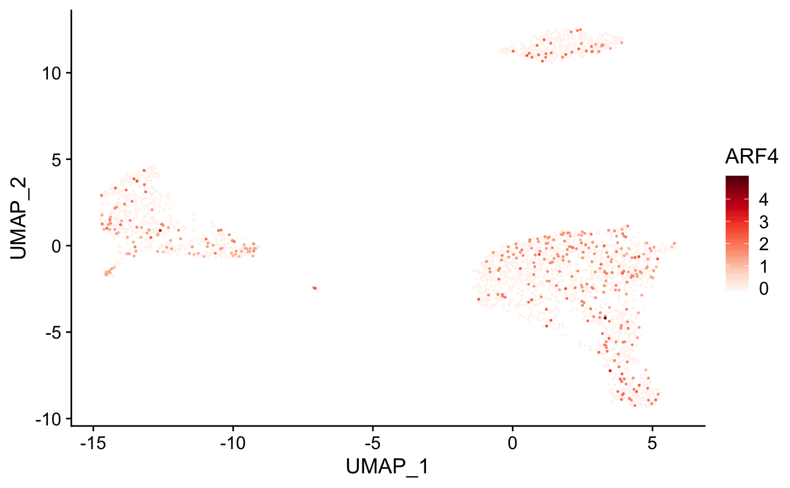

Plot gene expression on to tSNE or umap
plot_gene(expr_mat, metadata, genes, cell_col = NULL, ...)
| expr_mat | input single cell matrix |
|---|---|
| metadata | data.frame with tSNE or umap coordinates |
| genes | gene(s) to color tSNE or umap |
| cell_col | column name in metadata containing cell ids, defaults to rownames if not supplied |
| ... | additional arguments passed to |
list of ggplot object, cells projected by dr, colored by gene expression
genes <- c( "RP11-314N13.3", "ARF4" ) plot_gene( expr_mat = pbmc_matrix_small, metadata = tibble::rownames_to_column(pbmc_meta, "rn"), genes = genes, cell_col = "rn" )#> [[1]]#> #> [[2]]#>